Blütenpracht in Graz - Bäume

 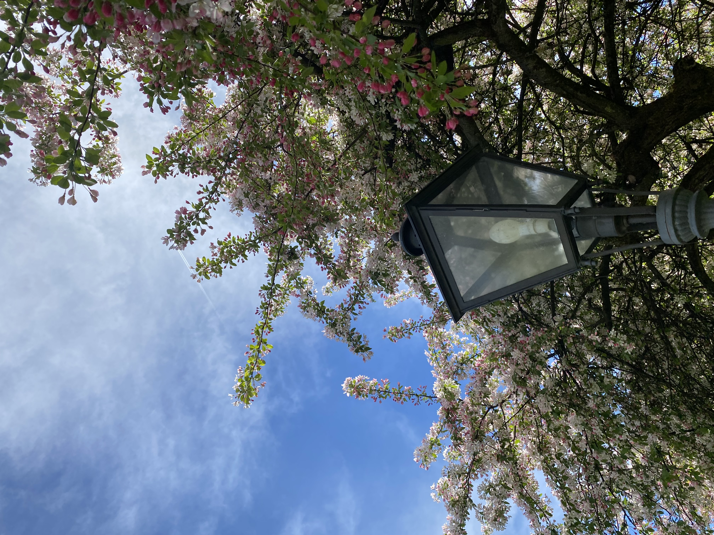
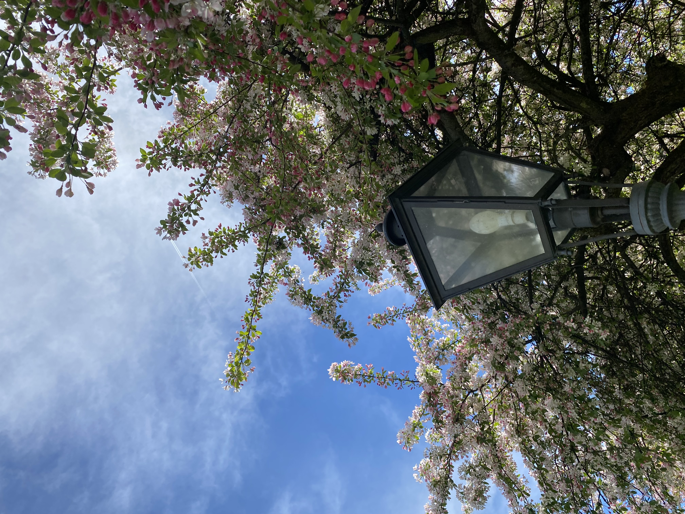

 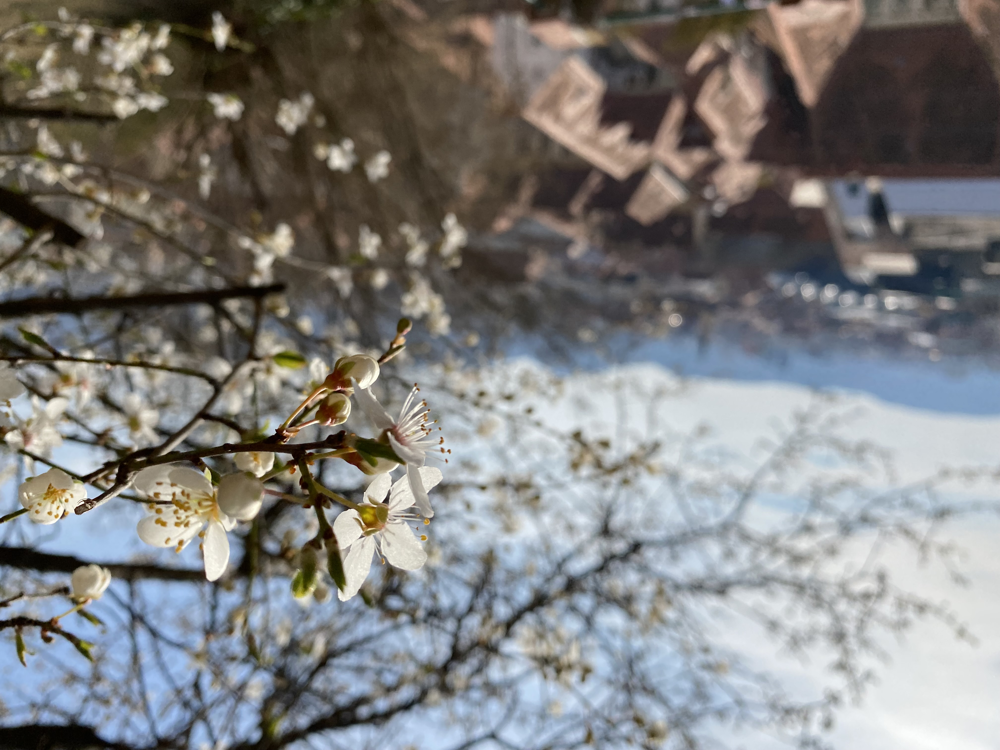
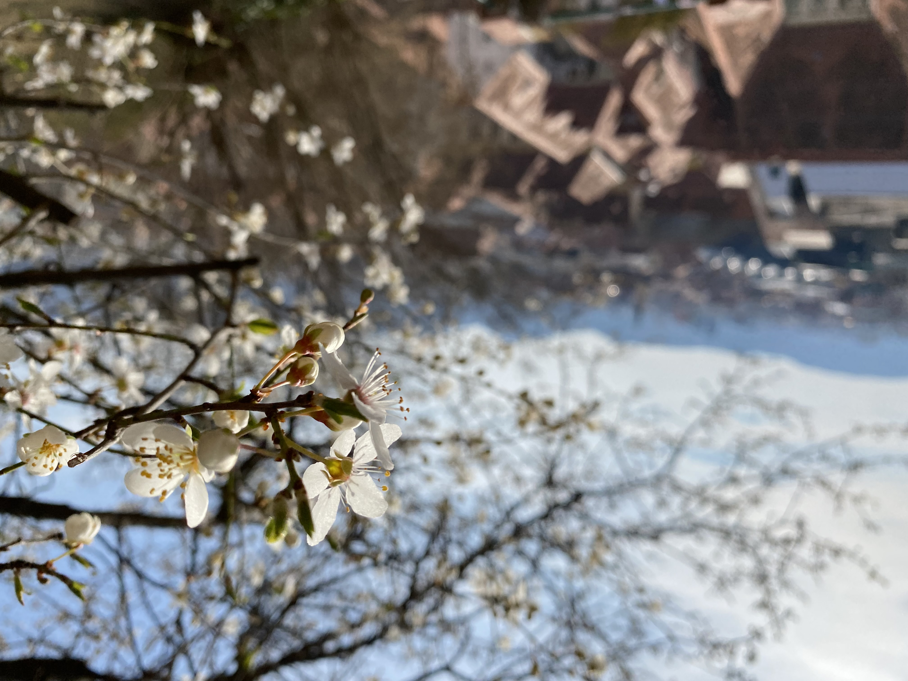


 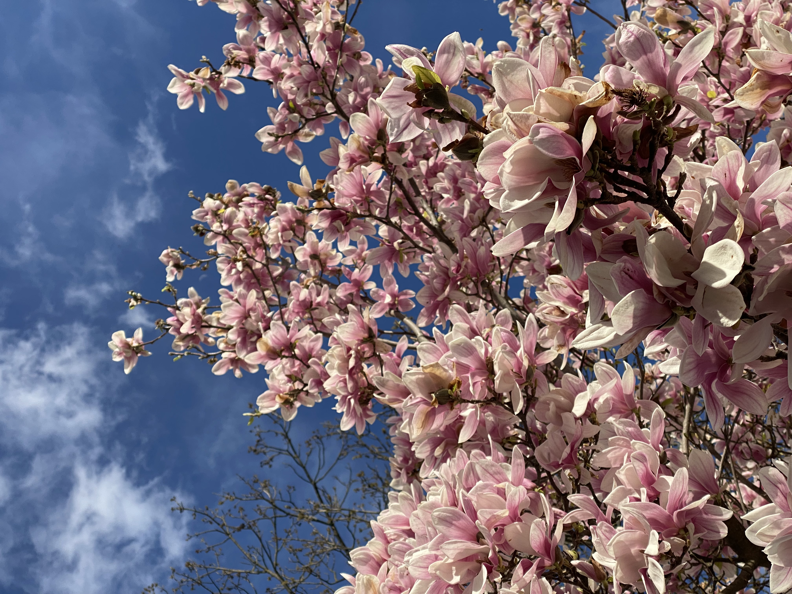
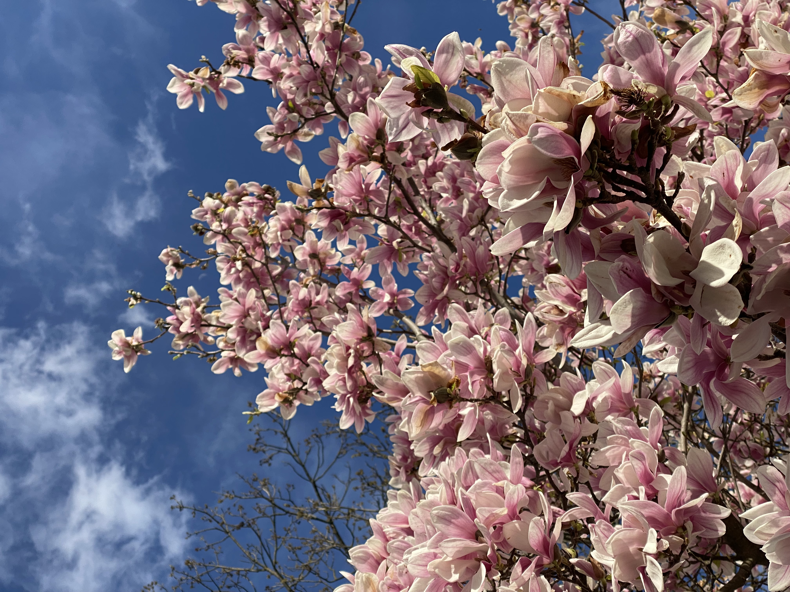

 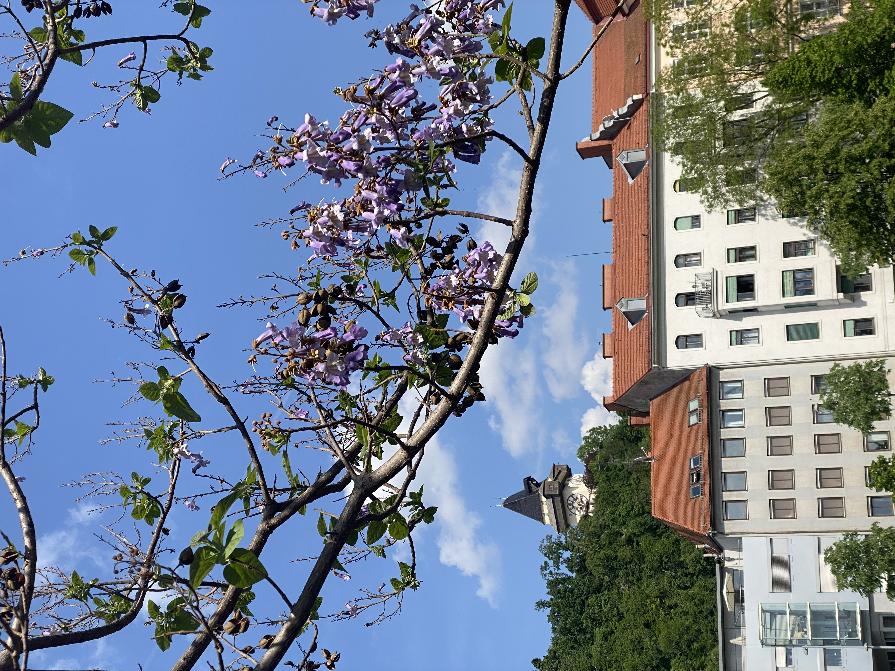
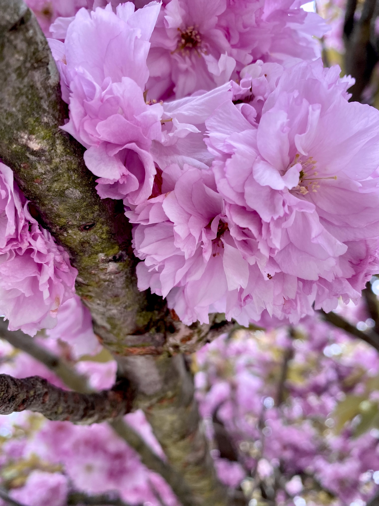
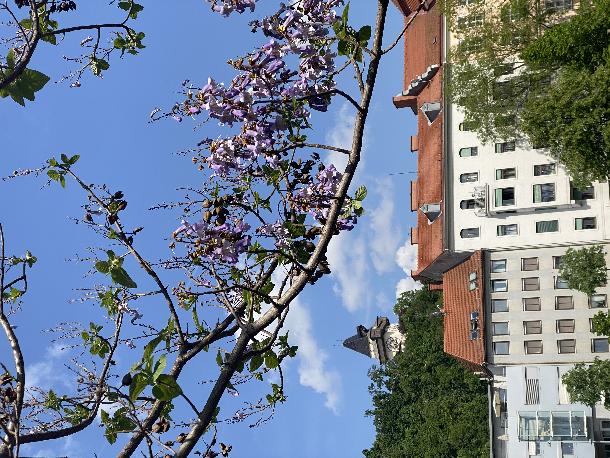
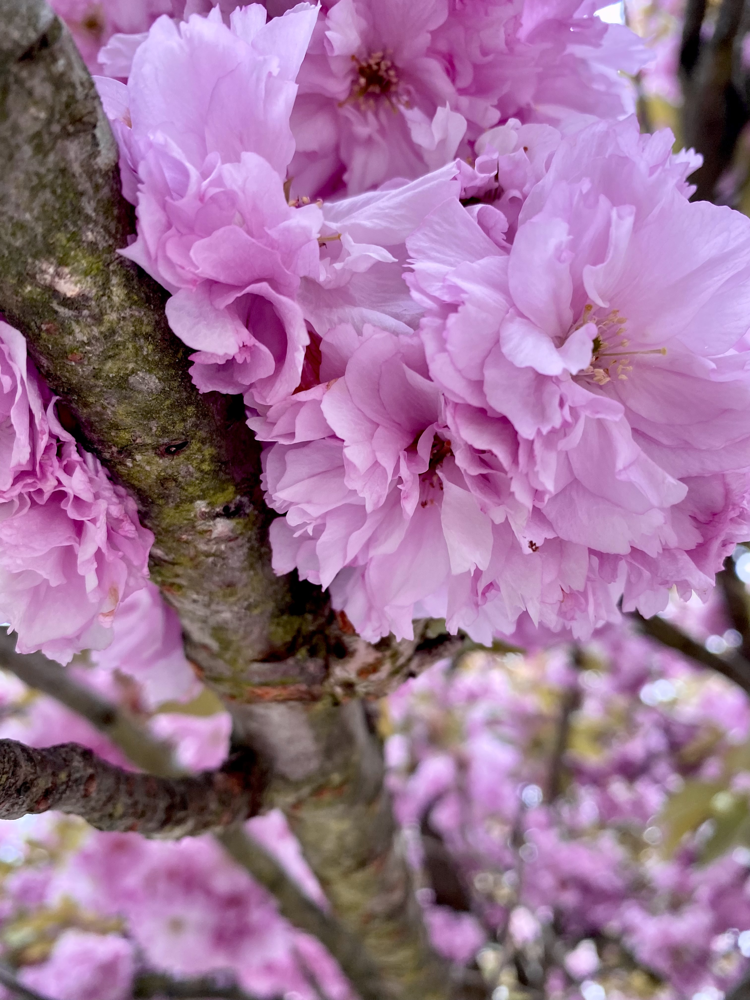
 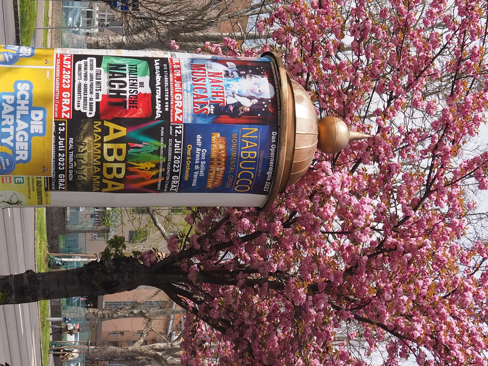
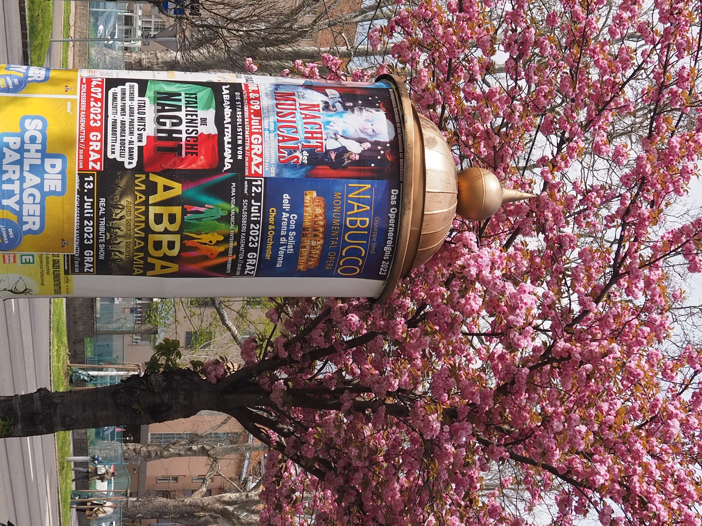
Graz mag eine Stadt sein, aber sie ist auch erstaunlich grün, und die Blütenpracht der Bäume ist ein echtes Highlight, das die Stadt in verschiedenen Jahreszeiten verzaubert. Besonders der Grazer Stadtpark ist ein botanisches Wunderwerk und beherbergt viele verschiedene Baumarten, was ihn zu einem fantastischen Ort für Spaziergänge und Naturbeobachtungen macht. Von mächtigen Altbäumen bis hin zu exotischen Gewächsen – die Vielfalt ist wirklich beeindruckend.
Im Frühling verwandeln sich die vielen Magnolien- und Kirschbäume in der Stadt in ein Meer aus zarten Farben. Ihre Blüten sind ein Fest für die Augen und ziehen Fotografen und Naturliebhaber gleichermaßen an. Im Grazer Umland, insbesondere in der idyllischen Hügellandschaft der Steiermark, findet man zudem unzählige Apfelbäume, die im Frühjahr mit ihren weißen und rosafarbenen Blüten eine malerische Kulisse bilden. Ein Spaziergang durch die Obstgärten zur Blütezeit ist ein unvergessliches Erlebnis. Die Bäume in Graz sind nicht nur ein wichtiger Teil des Stadtbildes, sondern auch ein Symbol für die Verbundenheit der Stadt mit der Natur und ihrer Schönheit.
Fun-Facts zur Blütenpracht der Bäume in Graz:
- Stadtpark-Artenvielfalt: Der Grazer Stadtpark ist ein Arboretum im Kleinformat und beherbergt seltene und alte Baumarten.
- Magnolien-Hotspots: Neben dem Stadtpark gibt es auch im Bereich des Schloss Eggenberg und in einigen Innenhöfen wunderschöne Magnolienbäume.
- Apfelblüte in der Region: Die Steiermark ist bekannt als "Apfelland", und die Apfelblüte im Frühjahr verwandelt ganze Landstriche in ein weiß-rosa Blütenmeer.
- Grüne Lungen: Die zahlreichen Parks und Grünflächen mit ihren Bäumen fungieren als wichtige "grüne Lungen" der Stadt und tragen zur Lebensqualität bei.